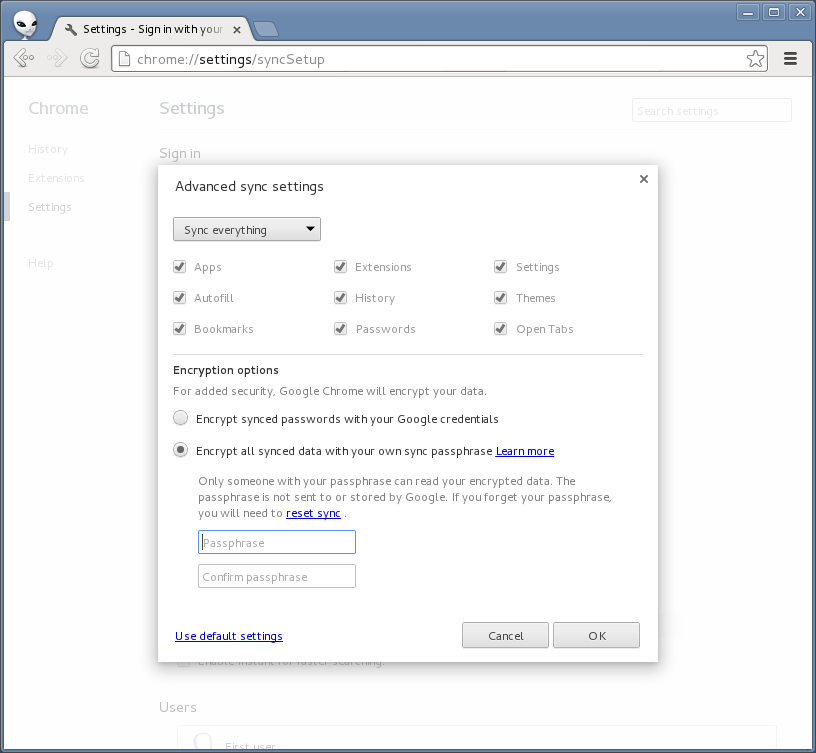

Despite Google’s statement, they still have access to your wifi passwords
UPDATE: The Android bug tracker isn’t the correct place to ask Google to fix this bug. The backup/restore feature is part of the proprietary Google apps for Android, not the open source Android project. This thread on the Google product forums is the correct place.
Earlier this week Ars Technica covered a bug report I posted on the Android issue tracker about the “Backup and restore” feature not offering encrypted backups.
Because there’s no option to encrypt your backup data on your Android device with a passphrase that you set, Google has the capability to see the plaintext data, including all your saved wifi passwords. Google can then be compelled to give up this data (and any other user data that they store) to the US government when requested to do so.
Google responded to Ars Technica:
Our optional ‘Backup my data’ feature makes it easier to switch to a new Android device by using your Google Account and password to restore some of your previous settings. This helps you avoid the hassle of setting up a new device from scratch. At any point, you can disable this feature, which will cause data to be erased. This data is encrypted in transit, accessible only when the user has an authenticated connection to Google and stored at Google data centers, which have strong protections against digital and physical attacks.
First, it’s great the backup/restore feature is optional. It’s great that if you turn it off Google will delete your data. It’s great that the data is encrypted in transit between the Android device and Google’s servers, so that eavesdroppers can’t pull your backup data off the wire. And it’s great they they have strong security, both digital and physical, at their data centers.
However, Google’s statement doesn’t mention whether or not Google itself has access to the plaintext backup data (it does). Not how easy it is for an attacker to get at this data, but how easy it is for an authorized Google employee to get at it as part of their job. This is important because if Google has access to this plaintext data, they can be compelled to give it to the US government.
In the bug report I didn’t mention being worried about hackers getting at the data. I’m worried about Google having the ability to hand this data to the US government when they receive requests for user data:
I don’t think it’s rational to expect users to trust Google with their plaintext passwords when Google can be compelled to give this data to the US government when they request it.
I don’t think Google is being malicious here. I just think they threw together this backup/restore feature before building in appropriate security measures. The bug report that I filed is simply a feature request: make it possible for users who don’t want to give Google our plaintext wifi passwords (and other backup data) to still use this feature.
Luckily, Google itself already knows exactly how to do this. The Chrome web browser saves apps, extensions, settings, autofill data, browser history, themes, bookmarks, open tabs, and passwords.
Chrome also lets users sync this data with Google’s servers. Clearly this is a lot of sensitive data, so Google offers to let people encrypt this data with a passphrase, on their own computer, before sending it to Google’s servers:

If the user forgets this passphrase they lose all their data.
Offering this same feature (letting users encrypt their backup data with a passphrase before sending it to Google) for Android is the only way that Google will be able to offer the backup/restore without having access to the plaintext data that’s being backed up.
The correct response for Google at this point is to label issue 57560 (“Backup and restore” should offer encrypted backups) as a security bug, set the priority to High, and promptly release an update to Android that fixes this bug.
I also want to point out that this issue isn’t unique to Android. Apple’s iCloud suffers from the same problem. In fact, any time you use a service that lets you back things up in the cloud, if you’re not encrypting it on your device with a passphrase that you choose, you’re giving your data to a third party that’s vulnerable to government requests for data. It’s also important to remember that the US government isn’t the only one that requests user data, all governments do. Choosing non-US cloud providers isn’t a solution.
Storing data in the cloud has become a huge convenience for computer users. Even in light of dragnet unconstitutional surveillance of the Internet by spy agencies, I don’t think it’s necessary to give up storing data in the cloud. We just need to store encrypted data in the cloud where users have the keys, not the cloud providers.


Legacy comments, imported from previous version of this blog:
adam gerard
November 21, 2015 08:30 PM
Hello, My names Adam, I was interested in finding out more about this topic. Firstly, i am very technology impaired. I joined G+ a 3 years ago with an idea of creating a first social media platform for a native healing site. Since the beggining Ive been plagued with problem after problem. I could not get it off the ground. The intrerest was overwhelming so i knew it wasnt that and many other subtle things would constsantly happen. These issues became ten fold after I accidently stumbled into their dirty little secret and it became clear why these probems I was plagued with and it became a cyber a war zone.Thwy have cloned my self and my members to cause us problems against each other. They redirected potential members from my site, They woulk clear my cookies , disable my extentions,Disable the groups I had bannd. They purposly sabotoged workshopsI had put together, the Elder who was teach the 4 day event had his G account and both youtube and facebook shut down the day before, He said they claimed he was an imposter, this old guy has a high profile. Now I read the policy and such but these situations go away and beyond. A person who had went on line to check out the site called me to say that I had been totaly erased off her PC, she has no ties with them. They show me coversations Ive had in HG months after. They have sent me all kinds of virus. They are clever in manipulating many unpleasant situations. They have my phone encrypted and I have no solution to decrypt it, I presently cannot access the 3 sites I run because the changed my primary account without telling me. I try to recover it and it tells me its the wrong password. I know for a fact those passwords are correct. They even cloned my whole site?? I managed to take a look in and saw they had listening devices on me> they have managed to destroy 3 phones with viruses , My texts are with held when there name comes up. I have tried to lodge a formal complaint against them and everytime they are intercepted and can never be delivered because I also read they have filters on me across the web. I called the wifi company because mine was shut off, they never did that and sent a technichan over to upgrade my security and they told me my phone and laptop were bugged. Im really at a rock and a hard place, Ive been desperatley trying to get access to my site and their stalling tactics because i believe through one of their laws, I lose control and they take it over. I do defend myself and my membership when they launch their cyber attacks with various techniques on us. Why have I lasted this long, because I would love to expose them, the internet was not set up for psychopathic insidious people. They are 100% racists, they house and protect large groups and I know who they are. I see when they talk about me with the title Shadow, that was my first password and I am totaly ignorant , but through their own devices and information was I able to hack into their information about me. Oh just a a foot note , they had taken my pictures of were I lived and placed them in G maps and their locations are wrong because I couldnt remember the locations lol. So I just set up fire wall and modzilla, I was just told they are preventing G from trying to open my mail. I was just approached by avast, offering me their new services for free and like a dummy I accepted only to find out today that they had encrypted the information from my site and I see theirs some kind of document on my first page underneath, I cant access it. So im just decideid if I should just disable or destroy my site before they launch their psychological experiment on the unsuspecting membership. Sorry about asking for advice and my spelling. Take care, I like your blog, Adam Gerard
Dwain
August 5, 2013 11:52 AM
hello there and thank you for your info – I've definitely picked up something new from right here. I did however expertise some technical issues using this website, since I experienced to reload the web site many times previous to I could get it to load correctly. I had been wondering if your web hosting is OK? Not that I'm complaining, but slow loading instances times will often affect your placement in google and could damage your high quality score if advertising and marketing with Adwords. Anyway I'm adding this RSS to my email and could look out for a lot more of your respective interesting content. Make sure you update this again very soon.